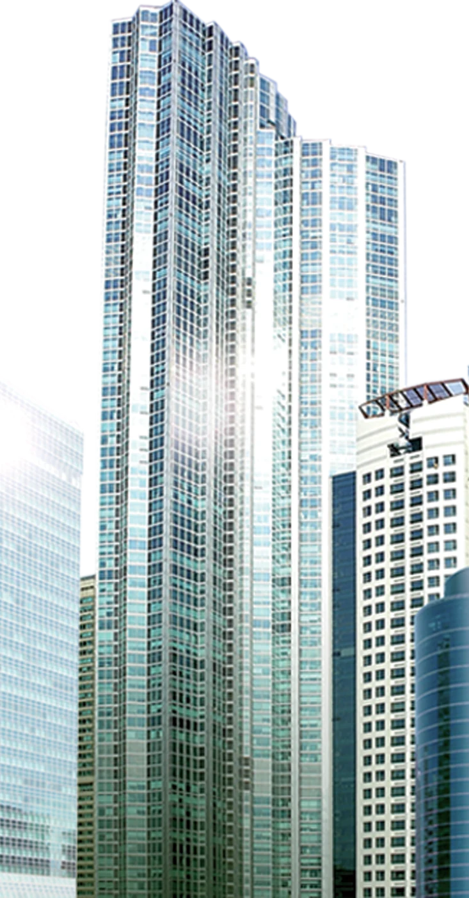

DiscoverPerfectionIn Every Detail IconicDestinationBusiness Excellence LuxuryEleganceYou Deserve Embrace theEco-FriendlyAbode ModernArchitectureMade Easy
JCX Developments is a real-estate partner building contemporary Residential, Commercial and Condominium addresses across Dhaka — with Japanese collaboration.
Two nations.One standard of building.
About Us
Not every home carries20 years of Japanese precision.
Since 2004, JCX has partnered with Japan’s Creed Group to build residences and towers that honor detail, sustainability, and trust — across Dhaka’s most sought-after addresses.
Three letters, three commitments: the craft of Japanese engineering, the community every address creates, and the skyline it adds to. Residential, Commercial and Condominium — from Bashundhara R/A to Jalshiri Abashon.
Discover JCXBy the numbers
Two decades,measured in addresses.

Projects
0+ Projects
Addresses that holdtheir value.
Residential and commercial developments across Dhaka’s most sought-after neighborhoods.
12 projects
Featured Projects
Four acts.One address.
The Arrival
A Block I address, twenty katha of it.
For Landowners
Your land.Our craft.
The Plot
Together, a landmark.
Twenty katha in Bashundhara. Boundary stones, a lone tree, and a decision worth crores.
40+ landowners partnered · 200+ katha delivered · Since 2013
Placeholder — client to confirm.
Step 01 · Consult
We survey. You watch.
Our team surveys the site and prepares a feasibility study at no cost to you.
Typical turnaround: 14 days.
Placeholder — client to confirm.
Step 02 · Agree
Terms, in writing. No fine print.
Landowner share, timeline and quality standard are documented before anything is signed.
Standard JV share range
Placeholder — client to confirm.
Step 03 · Build
We build. You watch that too.
Piling → Frame → Slab → Facade → Finish. Progress reported to you at every stage.
On-time delivery rate
Placeholder — client to confirm.
Step 04 · A Landmark
Your name, on a Dhaka address.
Every JCX project carries a landowner signature plate at the entrance. The tree stays.
Find Us On The Map
Explore JCXacross Dhaka.
Film
Explore our landmark projects
Awards & Recognition